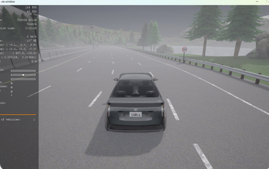

|
Joshua Udo I am a Computer Science student at Grambling State University in Louisiana. I am also currently a student researcher under Dr. Xin Qin in the CPX Lab at California State University, Long Beach. |

|
ResearchI'm interested in exploring how machine learning and cyber-physical systems can be leveraged to tackle diverse environmental issues. |
|  |
Safety analysis of driving scenarios within CARLA
Xin Qin, Daniel Peralta Contributing to this! :) |

|
Analysis of Crash Rates in High School Areas vs. Non-School Zones in Brooklyn on School Days
Adetayo Kalejaiye, Joshua Udo First research project :) |
|
|